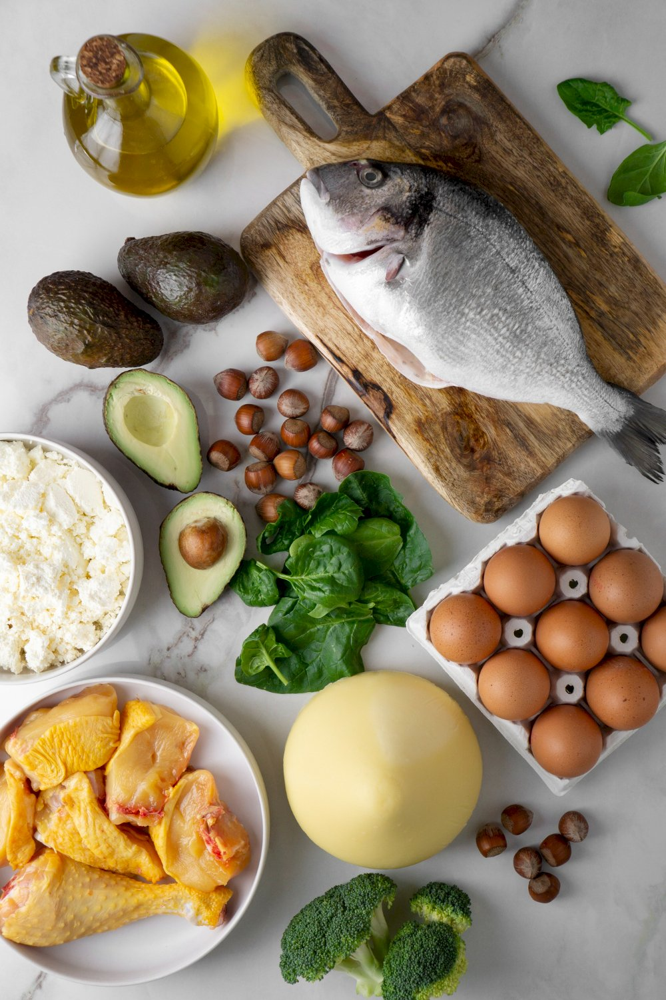

Avokádo denně může zlepšit kvalitu stravy
Tento článek pojednává o studii, která ukázala, že denní konzumace avokáda významně zlepšuje kvalitu stravy.
Studie zdůrazňuje, že zařazení avokád do jídelníčku podporuje dodržování zdravých stravovacích návyků, možná
díky jejich bohatému nutričnímu profilu

V kávě a lidském těle nalezená přírodní molekula zvyšuje hladiny NAD+ a zlepšuje funkci
svalů při stárnutí
Výzkumníci zjistili, že trigonelin, přírodní molekula přítomná v kávě a lidském
těle, může zvýšit hladiny NAD+ a zlepšit funkci svalů během stárnutí. Toto objevení ukazuje na potenciální
dietní intervence pro udržení svalového zdraví s věkem
Jaká je nejzdravější strava?
Tento článek prozkoumává různé zdravé diety a poskytuje vhledy na základě
nejnovějšího vědeckého výzkumu. Čtenáře povzbuzuje, aby zvážili, jak volby v oblasti stravy ovlivňují
celkové zdraví, a nabízí pokyny pro výběr nejzdravějších možností pro jednotlivce i rodiny